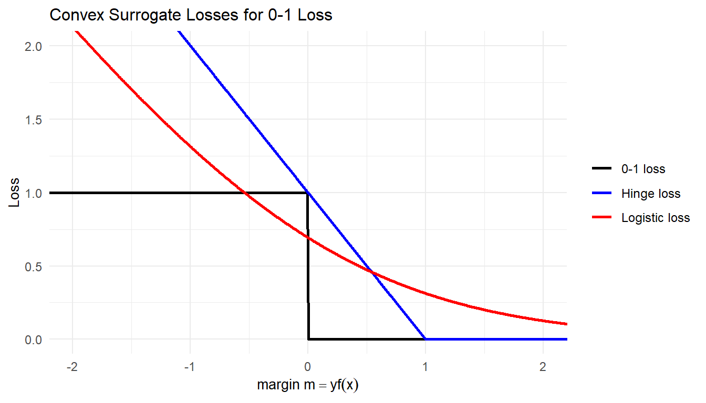

We consider individualized treatment rules (ITRs), also called treatment regimes, rules or policies, in a single-stage decision problem with baseline covariates \(X\in\mathcal X\) and action space \(\mathcal A\).
The value of a policy \(d\) is the expected outcome that would be observed if treatment were assigned according to \(d\). By iterated expectation, \[
\boxed{
V(d)
=\mathbb{E}\big[Y\{d(X)\}\big]
=\mathbb{E}\left[\mathbb{E}\big[Y\{d(X)\}\mid X\big]\right]
=
\mathbb{E}\left[
\sum_{a\in\mathcal A}
\mathbb{E}\big[Y(a)\mid X\big]\mathbb{1}\{d(X)=a\}
\right]
}
\]
If the treatment-specific conditional mean potential outcomes \(\mathbb{E}[Y(a)\mid X=x]\) are identified for each \(a\in\mathcal A\), then the value of any baseline treatment regime is identified as well. In particular, randomized trial data can in principle be used not only to compare static treatment strategies, but also to evaluate and learn individualized treatment rules, provided the regime is defined in terms of baseline covariates and standard support and causal conditions hold. In the unrestricted setting is simple, the optimal individualized treatment rule is therefore identified by assigning, at each covariate value \(x\), the treatment with the largest conditional mean potential outcome.
Choosing a policy class amounts to restricting attention to rules of a particular form, such as linear decision rules, trees, or other structured function classes. This restriction regularizes the learning problem and often improves interpretability, though it may exclude the unrestricted optimal rule if the class is too small. More generally, \(\mathcal D\) , optimal rule estimation reduces pointwise to choosing the treatment with the largest conditional mean potential outcome at each covariate value \(x\)\[
\boxed{d^{\mathrm{opt}}(x)\in\arg\max_{a\in\mathcal{A}} \mathbb{E}[Y(a)\mid X=x]}
\]
Conditional Mean Decompositions and Treatment Codings
Suppose \(z_1\in\mathcal Z\) is a designated baseline or control treatment. Then the conditional mean outcome under treatment \(z\) can be decomposed into a baseline component and a treatment-specific deviation: \[\begin{equation}
\mu(z,x) := \mathbb E(Y\mid X=x,Z=z)
=
\underbrace{\mathbb E(Y\mid X=x,Z=z_1)}_{\text{baseline/control surface}}
+
\underbrace{\left\{
\mathbb E(Y\mid X=x,Z=z)-\mathbb E(Y\mid X=x,Z=z_1)
\right\}}_{\text{conditional treatment contrast}}
\end{equation}\] This decomposition uses a as the reference level, namely \(z_1\), so the baseline is the conditional mean surface under that designated control treatment. For this reason, terms such as and should be used with some care here. The first term is often called a prognostic or baseline component because it provides the reference surface relative to which treatment contrasts are measured, while the second term is naturally prescriptive in that it captures how the mean outcome changes under treatment \(z\) relative to that reference. However, unless \(z_1\) is interpreted as a treatment-free or no-treatment condition, the first term is not literally treatment-free; it is simply the outcome surface under the chosen baseline arm. Thus, in this parameterization, may be more precise than , while or is often clearer than .
When there are more than two treatments, a related but distinct decomposition centers the treatment-specific conditional mean surfaces around their average under the conditional treatment distribution rather than around one chosen control. Writing \[\begin{equation}
\boxed{\mu(z,x)=\mathbb E(Y\mid X=x,Z=z)=\underbrace{m(x)}_{\text{baseline/global mean surface}}+\underbrace{\tau_z(x)}_{\text{conditional treatment deviation}}}
\end{equation}\] we define \[
m(x):=\mathbb{E}_Z\!\left[\mu(z,x)\mid X=x\right]
=
\int_{\mathcal Z} \mu(z,x)\,dF_{Z\mid X=x}(z),
\qquad
\tau_z(x):=\mu(z,x)-m(x).
\] By construction, \[
\begin{aligned}
\mathbb{E}_Z\!\left[\tau_Z(x)\mid X=x\right]
&=
\int_{\mathcal Z} \tau_z(x)\,dF_{Z\mid X=x}(z) \\
&=
\int_{\mathcal Z} \bigl(\mu(z,x)-m(x)\bigr)\,dF_{Z\mid X=x}(z) \\
&=
\int_{\mathcal Z} \mu(z,x)\,dF_{Z\mid X=x}(z)
-
m(x)\int_{\mathcal Z} dF_{Z\mid X=x}(z) \\
&= m(x)-m(x)=0.
\end{aligned}
\] Here, \(m(x)\) is the average of the treatment-specific conditional mean surfaces at fixed \(x\) under the distribution of \(Z\mid X=x\), and \(\tau_z(x)\) measures how treatment \(z\) deviates from that common baseline. In this second decomposition, the terminology versus is more natural: \(m(x)\) is a common background level summarizing outcome variation with \(x\) that is shared across treatment arms, while \(\tau_z(x)\) describes the treatment-specific departure from that shared background. Even here, however, should be understood as meaning common across treatments at fixed \(x\), not necessarily treatment-free in any literal causal sense.
The key distinction between these two decompositions is the choice of baseline. The first uses a \(z_1\) as the reference, so all contrasts are taken relative to that arm. The second uses the as the reference, so each treatment is represented by its deviation above or below that common mean surface. Correspondingly, the language of and fits the second decomposition more cleanly than the first: in the first, the “baseline” is a specific treatment arm, whereas in the second it is a common mean surface shared across all arms.
Using either decomposition we use under SUTVA, conditional ignorability, and positivity we can identify the PO mean with the conditional mean at \(X=x,Z=z\), \[
\mu(z,x)=\mathbb{E}[Y|Z=z,X=x] =\mathbb E[Y(z)\mid X=x]
\]
Some Geometry
Decomposition (2) has a nice visualization. Consider how the prognostic/grand mean outcome surface changes across \(X\) when a particular treatment \(z\) is assigned,
This geometric picture makes clear that the optimal treatment at covariate profile \(x\) is the one whose conditional mean surface lies highest, that is under decomposition (2) the common baseline \(m(x)\) plays no role in the pointwise maximization, and the optimal rule can equivalently be written as \[
d^{\mathrm{opt}}(x)\in\arg\max_{z\in\mathcal Z}\tau_z(x).
\] Thus, geometrically, the optimal treatment is the one with the largest upward deviation from the baseline surface \(m(x)\) at that covariate value. For the purpose of determining the optimal rule, only prescriptive variation—covariate variation that changes the relative ordering of treatment-specific conditional mean surfaces—matters. Broadly a covariate is if it affects the level of the outcome surface without altering the ranking of treatments, whereas it is if it affects the relative ranking of treatments and hence can change the optimal treatment decision.
Most precision medicine methods skip the ITR surface characterization and instead optimize indirectly over unrestricted policy classes or directly over rich policy classes through something like a classifier. Further most methods do not include uncertainty quantification for ITR at the individual level.
Binary Treatments
Given mean identification and binary treatments \(\mathcal Z=\{z_1,z_2\}\), we may study the conditional mean surface entirely through the identified observed-regression function \(\mu(z,x)\) and the decompositions above,
Optimal treatment rules under binary treatment
If we code \(\mathcal Z=\{z_1,z_2\}\) and let \(d:\mathcal X\to\{z_1,z_2\}\) be a treatment rule, then \[
Y\{d(X)\}
=
Y(z_2)\left(\frac{d(X)-z_1}{z_2-z_1}\right)
+
Y(z_1)\left(\frac{z_2-d(X)}{z_2-z_1}\right).
\] Hence the conditional mean outcome under the rule is \[
\mu_d(x):=\mathbb E[Y\{d(X)\}\mid X=x]
=
\left(\frac{d(x)-z_1}{z_2-z_1}\right)\mu(z_2,x)
+
\left(\frac{z_2-d(x)}{z_2-z_1}\right)\mu(z_1,x).
\]
General Optimal Rule Estimation Methods: and
Treatment effect heterogeneity (\(\tau_z(x)\) changes by \(z\) ) motivates a treatment based on covariates, assigning patients to treatments which they are expected to benefit the most from. This idea is encoded by maximizing the value,
\[d^{opt} \in \arg \max_{d \in \mathcal{D}} V(d)\] where
. For causal identification of the value we assume the usual unconfounding and SUTVA and an expanded positiivty to consider all possible policies/rules in our class
Suppose the outcome model is correctly specified and it is a parametric model depending on \(\beta\), so that \(\mu(Z,X)=\mu(Z,X;\beta_0)\) for some true \(\beta_0\). Then the optimal regime is \[
d^{\mathrm{opt}}(X;\beta_0)
=
\mathbb{1}\!\left\{
\mu(1,X;\beta_0)>\mu(0,X;\beta_0)
\right\}.
\] If we estimate \(\hat\beta\), we obtain the pointwise plug-in rule \[
d^{opt}_{\hat \beta}(X) =
\mathbb{1}\!\left\{
\mu(1,X;\hat \beta)>\mu(0,X;\hat \beta)
\right\}.
\] whose value may be estimated by the projection, or purely outcome-regression, value estimator \[\hat V_{\mathrm{OR}}\!\left(d_{\hat \beta}\right)
=
\widehat{\mathbb{E}}\!\left[
Y\{d_{\hat\beta}(X)\}
\right]
=
\frac{1}{n}\sum_{i=1}^n
\left[
\mu(1,x_i;\hat\beta)d_{\hat \beta}(x_i)
+
\mu(0,x_i;\hat\beta)\{1-d_{\hat \beta}(x_i)\}
\right]\]
A posited model for \(\mu(z,x;\beta)\), whether correct or not, may be viewed as inducing a class of treatment regimes indexed by \(\beta\), even though only a subset of the components of \(\beta\) may actually determine the treatment rule. That is, some subvector \(\eta\subset\beta\) may represent the part of the model.
For example, if \[
\mu(Z,X;\beta)
=
\exp\bigl(
\beta_0+\beta_1X_1+\beta_2X_2
+
Z(\beta_3+\beta_4X_1+\beta_5X_2)
\bigr),
\] then the induced treatment rule depends only on \(\eta=(\beta_3,\beta_4,\beta_5),\) the coefficients governing effect modification by treatment. Thus, although the full parameter \(\beta\) indexes the outcome model, only the prescriptive subvector \(\eta\) indexes the treatment regime. The remaining components of \(\beta\) help model the outcome surface but do not affect the decision boundary itself. This suggests that value estimation should focus on the prescriptive component \(\eta\), rather than on the full outcome-model parameter \(\beta\), \[
V(d_\eta)=\mathbb{E}\bigl\{Y\{d_\eta(X)\}\bigr\}.
\]
The prognostic part of the outcome model may aid efficiency, but the regime itself is determined only by \(\eta\), and policy learning should therefore be organized around that lower-dimensional, decision-relevant subset \(\eta\). Like the analogous estimators of the mean potential outcome under treat all or treat none, the projection, or outcome-regression, estimator is consistent only if the outcome regression model \(\mu(z,x;\beta)\) is correctly specified. Therefore we can express the projection/outcome regression estimator as,
Where \(\hat \beta\) is still used in fitting the full outcome regressions but only \(\hat \eta\) is used for the rules
There is likewise an IPW representation of regime value which, in essence, is a change-of-measure identity: it rewrites the counterfactual mean under regime \(d\) as a weighted observed-data expectation, where the weights are the inverse probabilities of receiving the treatment assigned by \(d\). If \(P\) is the distribution of \((X,Z,Y)\) and \(\mathbb{E}\) is respect to \(P\) then if \(P^{\mathcal{D}}\) is the distribution of \((X,Z,Y)\) given \(Z=\mathcal{D}(X)\) with expectation \(\mathbb{E}^{\mathcal{D}}\) with respect to \(P^{\mathcal{D}}\) then by the radon nikodym derivative we have the change of measure (here we use \(\mathcal{D}\) instead of \(d\) for a regime because of the differentials), then given \(P(X,Z,Y) = P(Y|Z,X) P (Z|X) P(X)\) we know \(dP(X,Z,Y) = p(Y|Z,X) p (Z|X) p(X) dXdZdY\) and
Zhang et al. combine the IPW and Outcome Regression estimators into a robust AIPW estimator of the value of a regime indexed by \(\eta\) - this mirrors the AIPW for treat all and treat none regimes we are accustomed to.
This is doubly robust and only dependent on perscriptive \(\eta\).
Off-Policy Evaluation and Learning; Reinforcement Learning Connections
The weighting ideas above are especially useful for defining and estimating the value of policies that were not actually used to generate the data. This is usually called . The observed data are a “batch” generated under some behavior treatment-assignment mechanism, say \(\pi(z\mid X)\), while the target policy \(d\) assigns treatment according to \(d(X)\). Even though the target policy was not implemented in the sample, its value can still be identified under consistency, exchangeability, and positivity.
For a fixed policy \(d\), the policy value is \[
V(d)=\mathbb E\{Y(d(X))\}.
\] Using inverse-probability weighting, \[
V_{\mathrm{IPW}}(d)
=
\mathbb E\left[
\frac{\mathbb 1\{Z=d(X)\}}{p(Z\mid X)}Y
\right].
\] This is an off-policy evaluation formula: it evaluates the value of a particular candidate rule \(d\) using data generated under a different assignment mechanism. Subjects whose observed treatment agrees with the rule \(d(X)\) are upweighted to represent the full covariate stratum, while subjects whose observed treatment disagrees with the rule receive zero weight in the pure IPW representation.
This distinction matters. If \(d\) is fixed in advance, then we are doing . If instead we search over a class of policies \(\mathcal D\) and choose the rule with the largest estimated value, \[
\hat d
\in
\arg\max_{d\in\mathcal D}\hat V_{\mathrm{IPW}}(d),
\] then we are doing . In other words, off-policy learning uses off-policy evaluation as its objective function. In this way, the observed data can be used to identify and estimate the value of policies not actually implemented in the sample. Augmented inverse-probability weighting refines this argument by combining the same reweighting with an outcome-regression correction, so that even subjects who did not follow the target rule still contribute through model-based augmentation, while introducing double robustness when one of the nuisance models is incorrectly specified
Connections to Reinforcement Learning and Contextual Bandits
Multi-armed bandit problems can be viewed as the one-step, or effectively stateless, special case of reinforcement learning: the learner chooses an action, observes a reward for the chosen action, and does not model any evolving state or future consequences. The single-stage ITR problem is the contextual (action choice is conditional on observed covariates/context \(X\)) version of this setup, where treatment decisions are allowed to depend on baseline covariates \(X\) - A adds baseline information before the action is chosen. In ITR language, the baseline covariates \(X\) are the , the treatment \(A\) is the , the outcome \(Y\) is the , and an individualized treatment rule \(d\) is a . The goal is the same as in optimal policy learning in biostat: learn a policy that maximizes expected reward if that policy were followed, \[
V(d)=\mathbb E[Y\{d(X)\}].
\]
Thus, the single-stage ITR setting is naturally an problem. It is , or , because the data have already been collected under some treatment-assignment mechanism \(p(a\mid X)\), rather than through active interaction between the learner and an environment. It is a problem because we observe only the reward for the action actually taken, not the rewards that would have been observed under the other possible actions. It is because the action can depend on observed baseline covariates. In short, we observe context \(X\), observe or assign action \(A\), and receive reward/outcome \(Y\).
This gives the following translation: \[
\begin{array}{c|c|c}
\text{Symbol} & \text{ITR / causal inference language} & \text{RL / bandit language} \\
\hline
X & \text{baseline covariates} & \text{context} \\
A & \text{treatment} & \text{action} \\
Y & \text{outcome} & \text{reward} \\
d(X) & \text{individualized treatment rule} & \text{policy} \\
p(a\mid X) & \text{treatment-assignment mechanism} & \text{behavior/logging policy} \\
V(d)=\mathbb E[Y\{d(X)\}] & \text{value of the treatment rule} & \text{policy value / expected reward}
\end{array}
\]
Under consistency, exchangeability, and positivity, the value of a target policy \(d\) can be evaluated from data generated under the behavior policy \(\pi\): \[
V(d)
=
\mathbb E\left[
\frac{\mathbb 1\{A=d(X)\}}{p(A\mid X)}Y
\right].
\] Thus, inverse-probability weighting is the causal-inference version of off-policy evaluation. When we search over a class \(\mathcal D\) and choose \[
\hat d\in\arg\max_{d\in\mathcal D}\hat V(d),
\] we are doing offline “batchwise” policy learning.
The main caveat is that ordinary single-stage ITR learning is not full sequential reinforcement learning. Full RL usually involves sequential decisions, time-varying states, delayed rewards, and dynamic feedback between actions and future covariates. A single-stage ITR has none of that structure. So it is best described as , equivalently the one-step or stateless special case of reinforcement learning.
Examples
A Simple RCT: ACTG
ACTG \(175\) (AIDS Clinical Trials Group 175) was a four-arm randomized trial, with treatment assigned with probability \(1/4\) to each arm, including the control arm. For this analysis, I collapse the original treatment arms into a binary comparison, which I describe as no treatment versus treatment.
After collapsing treatment arms, the relevant propensity score is not the original four-arm probability, but the collapsed randomization probability, \[
p(A=a\mid X)=\Pr(A=a),
\qquad a\in\{0,1\}.
\]
Thus, positivity should be checked with respect to the collapsed treatment probabilities. For a fixed policy \(d\), the proportion of observed subjects whose assigned treatment agrees with the rule, \[
\frac{1}{n}\sum_{i=1}^n \mathbb 1\{A_i=d(X_i)\},
\] should be close, in large samples, to the corresponding probability induced by the collapsed randomization design.
Warning: package 'speff2trial' was built under R version 4.4.3
Loading required package: leaps
Warning: package 'leaps' was built under R version 4.4.3
Loading required package: survival
Warning: package 'dplyr' was built under R version 4.4.3
Attaching package: 'dplyr'
The following objects are masked from 'package:stats':
filter, lag
The following objects are masked from 'package:base':
intersect, setdiff, setequal, union
Min. 1st Qu. Median Mean 3rd Qu. Max.
-634.0 -53.0 13.0 20.8 89.0 860.0
So we have 532 control and 1607 treatment patients with a fixed treatment assignment probability of \(3/4\).
## ---------------------------------------------------------## 2. Outcome regression models mu(a, x)## ---------------------------------------------------------form_mu <-as.formula(paste("Y ~", paste(xvars, collapse =" + ")))fit_mu0 <-lm(form_mu, data =filter(dat, A ==0))fit_mu1 <-lm(form_mu, data =filter(dat, A ==1))dat1 = dat## predicted conditional means for every subject under both armsdat1$mu0_hat <-predict(fit_mu0, newdata = dat1)dat1$mu1_hat <-predict(fit_mu1, newdata = dat1)## estimated contrastdat1$Delta_hat <- dat1$mu1_hat - dat1$mu0_hat## plug-in ruledat1$d_or <-as.integer(dat1$Delta_hat >0)dat1$mu_d_or =ifelse(dat1$d_or ==1, dat1$mu1_hat, dat1$mu0_hat)table(dat1$d_or)
0 1
30 2109
Outcome regression and indirect thresholding to find the rule pointwise gives mostly treatment predictions. With the value of this indirect OR thresholding rule given by,
We can find the \(IPW\) value of this OR learned rule,
## ---------------------------------------------------------## 4. IPW value estimator## ---------------------------------------------------------## V_IPW(d) = n^{-1} sum 1{A_i = d(X_i)} Y_i / pi_hat(A_i | X_i)#### Here we use constant pi_hat = P(A = 1), estimated from the data.## ---------------------------------------------------------p1_hat <-mean(dat1$A ==1)dat1$pi_hat <-ifelse(dat1$A ==1, p1_hat, 1- p1_hat)V_IPW <-mean((dat1$A == dat1$d_or) * dat1$Y / dat1$pi_hat)V_IPW
[1] 34.1
We can also define a policy class and search the IPW value over that policy class. Let’s take a simple policy class of all policies cutting off baseline \(CD_{4} \in [0,1000]\) by increments of \(100\) so,
and the best rule according to IPW among this policy class is,
ipw_vals[which.max(ipw_vals)]
CD40 <= 800
34.12
We can do similar thigns for AIPW, first finding the value of our plug in OR indirectly learned threshdoled rule and now our new \(CD_{4}\) cutoff rule!
Here, positivity and the observed proportion following the rule are quite similar, which is unsurprising because treatment assignment arises from a randomized trial and is therefore largely independent of baseline covariates. As a result, the conditional probability of receiving the treatment recommended by a rule does not vary much across covariate profiles, so the model-based positivity summary and the empirical proportion of subjects whose observed treatment agrees with the rule are numerically close.
So if we do not explicitly restrict the policy class, our indirect plug-in rule can perform quite well under AIPW value estimation. In that sense, the rule behaves as though it were being chosen from a rich decision class, since treatment is assigned pointwise according to whichever fitted conditional mean surface, \(\hat\mu(1,x)\) or \(\hat\mu(0,x)\), is larger at a given covariate value. This can make the resulting rule substantially more adaptive than a policy learned within a prespecified low-dimensional class such as linear rules or simple threshold rules. Of course, this flexibility is only apparent: the induced rule is still constrained by the class of outcome models used to estimate \(\mu(a,x)\), so it is not genuinely unrestricted over all measurable policies here. If we were to replace linear outcome regression with a more flexible estimator, such as kernel regression, splines, trees, or other nonparametric methods, then the induced plug-in rule would also become more flexible. Thus, for indirect methods, the effective richness of the decision rule is inherited from the richness of the outcome-regression model itself. The tradeoff is that greater flexibility may improve approximation to the optimal rule, but it can also make the learned rule less interpretable, more sensitive to estimation noise, and more prone to optimistic in-sample value estimates.
Observational Study with known confounders: LaLonde
Min. 1st Qu. Median Mean 3rd Qu. Max.
0 238 4759 6793 10894 60308
## ---------------------------------------------------------## 2. Propensity score model## ---------------------------------------------------------## LaLonde is observational / non-randomized in this common version,## so estimate p(A = 1 | X).## ---------------------------------------------------------ps_form <-as.formula(paste("A ~", paste(xvars, collapse =" + ")))fit_ps <-glm(ps_form, data = dat, family =binomial())dat$pi1_hat <-predict(fit_ps, type ="response")dat$pi1_hat <-pmin(pmax(dat$pi1_hat, 0.01), 0.99)dat$pi_hat <-ifelse(dat$A ==1, dat$pi1_hat, 1- dat$pi1_hat)summary(dat$pi1_hat)
Min. 1st Qu. Median Mean 3rd Qu. Max.
0.0100 0.0485 0.1207 0.3013 0.6387 0.8532
summary(dat$pi_hat)
Min. 1st Qu. Median Mean 3rd Qu. Max.
0.025 0.616 0.855 0.745 0.951 0.990
## ---------------------------------------------------------## 3. Outcome regression models mu(a, x)## ---------------------------------------------------------form_mu <-as.formula(paste("Y ~", paste(xvars, collapse =" + ")))fit_mu0 <-lm(form_mu, data =filter(dat, A ==0))fit_mu1 <-lm(form_mu, data =filter(dat, A ==1))dat1 <- dat## predicted conditional means for every subject under both armsdat1$mu0_hat <-predict(fit_mu0, newdata = dat1)dat1$mu1_hat <-predict(fit_mu1, newdata = dat1)## estimated contrastdat1$Delta_hat <- dat1$mu1_hat - dat1$mu0_hat## plug-in OR ruledat1$d_or <-as.integer(dat1$Delta_hat >0)dat1$mu_d_or <-ifelse(dat1$d_or ==1, dat1$mu1_hat, dat1$mu0_hat)table(dat1$d_or)
0 1
163 451
## ---------------------------------------------------------## 4. Outcome-regression value of plug-in OR rule## ---------------------------------------------------------V_OR <-mean(dat1$mu_d_or)V_OR
[1] 7924
## ---------------------------------------------------------## 5. IPW value of plug-in OR rule## ---------------------------------------------------------V_IPW <-mean((dat1$A == dat1$d_or) * dat1$Y / dat1$pi_hat)V_IPW
[1] 7359
## ---------------------------------------------------------## 6. AIPW value of plug-in OR rule## ---------------------------------------------------------V_AIPW <-mean( dat1$mu_d_or + (dat1$A == dat1$d_or) / dat1$pi_hat * (dat1$Y - dat1$mu_d_or))V_AIPW
When using an indirect method like thresholding the idea of imposing some regularization is naturally implemented by simply using regularized estimators for your plug in models and this idea is explored extensively by Qian and Murphy. Additionally, if I estimate a treatment contrast or conditional mean structure and then induce a rule by thresholding or maximizing that estimated contrast, how good can the resulting indirect rule be with said regularization? Qian and Murphy address these question by first estimating the conditional outcome models using LASSO/penalized models characterizing the value through IPW \[V_{\mathrm{IPW}}(d) = \mathbb{E}\left[\frac{\mathbb{1}\{Z = d(X)\}}{p(Z|X)}Y\right]\]and defining the quality of treatment \(Z\) at \(X\) as \(Q_0(X,Z) := \mathbb{E}(Y|X,Z)\) then by iterated expectation,\[V_{\mathrm{IPW}}(d) = \mathbb{E}\left[\mathbb{E}\left[\frac{\mathbb{1}\{Z = d(X)\}}{p(Z|X)}Y \middle| X,Z\right]\right] = \mathbb{E}\left[\frac{\mathbb{1}\{Z = d(X)\}}{p(Z|X)}Q_0(X,Z)\right]\]Then conditioning on \(X\) again,\[V_{\mathrm{IPW}}(d) = \mathbb{E}\left[\frac{\mathbb{1}\{Z = d(X)\}}{p(Z|X)}Q_0(X,Z)\right] = \mathbb{E}\left[\mathbb{E}\left[\frac{\mathbb{1}\{Z = d(X)\}}{p(Z|X)}Q_0(X,Z)\middle| X\right]\right]\]The inner expectation can be expressed as a sum across all actions \(\mathcal{Z}\), \[\begin{aligned}\mathbb{E}\left[\frac{\mathbb{1}\{Z = d(X)\}}{p(Z|X)}Q_0(X,Z)\middle| X\right] &= \mathbb{E}\left[\Sigma_{z \in \mathcal{Z}}\left(\frac{\mathbb{1}\{z = d(X)\}}{p(z|X)}Q_0(X,z)p(z|X)\right)\right]\\
&= \mathbb{E}\left[\Sigma_{z \in \mathcal{Z}}\mathbb{1}\{z = d(X)\}Q_0(X,z)\right] = \mathbb{E}\left[Q_0(X,d(X))\right]\end{aligned}\]therefore \(V_{\mathrm{IPW}}(d) = \mathbb{E}[Q_0(X,d(X))]\) and because \(d^{opt}(X)\in\arg\max_{z\in\mathcal Z}Q_0(X,z)\), \[V_{\mathrm{IPW}}(d^{opt}) = \mathbb{E}[Q_0(X,d^{opt}(X))] = E[max_{z\in \mathcal{Z}} Q_0(X,z)]\]this suggests if we can estimate \(Q_0\) well then we can estimate the rule well, that is regret is exactly the loss from choosing the wrong treatment under the true \(Q_0\)\[R(\hat d) = V(d^{opt}) - V(\hat d) = E\left[Q_0(X,d^{opt}(X)) - Q_0(X,\hat d(X))\right]\] but the policy problem depends on \(Q_0\) only through the ordering of treatment-specific conditional means at each covariate value \(x\), so estimating \(Q_0\) well is sufficient for estimating the rule well, but not necessary.
General Bounding Errors
To address how the question of how estimation of \(Q_0\) effects estiamtion of the optimal rule, Qian and Murphy prove results linking regret to prediction error in \(Q_0\), supposing \(Q_0\) is square integrable and \(p(z|x) \geq S^{-1}\) for \(S>0\) for all pairs \((x,z)\). Then breaking it into the sum of prognostic and treatment components, \[Q_0(X,Z) = \underbrace{E[Q_0(X,Z)|X]}_{m_0(X)} + \underbrace{T_0(X,Z)}_{Z \tau_0(X)}\]and \[Y = m_0(X) + T_0(X,Z) + \varepsilon\]yielding \(d^{opt}(X) \in \arg \max_{z} T_0(X,z)\). Therefore when taking the difference in mean responses between treatment/action(s) the \(m_0(x)\) cancels. So the separation between the best action(s) and the best suboptimal treatment/action (the best wrong treatment/action at covariate value \(x\)) is exactly the gap in \(T_0(x,z)\),
Because the plug-in rule can inherit undesirable features of the estimated outcome-regression surface, Qian and Murphy use LASSO (\(\ell_1\)-penalized least squares) to induce regularization. The goal is to trade some bias for reduced variance, thereby stabilizing the estimated decision boundary and improving finite-sample performance
Theorem 4.1 This is the first theorem in the lasso/\(l_1\)-PLS part. It gives the finite-sample control needed for the estimated regression object in their two-step procedure. This is the bridge from abstract regret bounds in Section 3 to their specific estimator in Section 4. It matters, but mostly as support for the next theorem.
Theorem 4.2 This is the main theorem of the paper for the proposed method. It gives a finite-sample upper bound on the difference between the value of the optimal rule and the value of the estimated rule obtained from their two-step \(l_1\)-PLS plug-in procedure. The introduction explicitly says this is what the paper is doing: derive finite-sample upper bounds on the gap between the mean response under the estimated ITR and the optimal ITR
Corollary 4.1 This is the clean rate statement people usually quote. It turns the finite-sample bound into an explicit convergence rate for
The optimal rule problem under binary treatments with coding \(\{-1,1\}\) can be reformulated as a weighted classification problem, or equivalently as a weighted empirical risk minimization problem; Starting from repurposing, \[\begin{aligned}d^{opt}(X) &\in \arg\max_{d:\mathcal X\to\{-1,1\}} \mathbb{E}\left[|\Delta(X)|d(X)sign(\Delta(X))\right]\end{aligned}\]Because \(d(X) \in \{-1,1\}\) we can express \(d(X)sign(\Delta(X))\) using indicators \(\{1-2\mathbb{1}\{d(X) \neq sign(\Delta(X))\}\),
In the binary treatment setting with known propensity score \(\pi(X)=p(Z=1\mid X)\), Zhao et al. proposed outcome weighted learning (OWL), which reformulates value maximization as an inverse-probability-weighted objective based only on observed data, contrasting with Zhang’s formulation based on the unobserved treatment contrast \(\Delta(X)\). Thus, OWL can be viewed as an observed-data, implementable counterpart to Zhang’s broader weighted-classification characterization of the optimal rule. In its original form, however, OWL has several important restrictions. It is developed for binary treatments, assumes the treatment mechanism is known or consistently estimated with positivity \(0<\pi(X)<1\), and requires the reward used as the classification weight to be nonnegative. The nonnegativity is needed for the weighted SVM interpretation because the case weights \(Y_i/p(A_i\mid X_i)\) must be nonnegative and therefore to apply OWL \(Y_i \geq 0\) (a rather restrictive requirement).
OWL is built from the IPW value,
\[
\begin{aligned}
d^{opt}
&\in \arg\max_{d:\mathcal X\to\{-1,1\}} V(d) \\
&= \arg\max_{d:\mathcal X\to\{-1,1\}}
\mathbb{E}\left[
\frac{\mathbb{1}\{Z=d(X)\}}{p(Z\mid X)}Y
\right] \\
&= \arg\max_{d:\mathcal X\to\{-1,1\}}
\left\{
\mathbb{E}\left[\frac{Y}{p(Z\mid X)}\right]
-
\mathbb{E}\left[
\frac{Y}{p(Z\mid X)}
\mathbb{1}\{Z\neq d(X)\}
\right]
\right\}.
\end{aligned}
\] Since the first term does not depend on \(d\), maximizing the value is equivalent to minimizing \[
d^{opt}
\in
\arg\min_{d:\mathcal X\to\{-1,1\}}
\mathbb{E}\left[
\frac{Y}{p(Z\mid X)}
\mathbb{1}\{Z\neq d(X)\}
\right].
\]
Usually given treatments are coded \(-1/1\) we have, \[
d^{opt}
\in
\arg\min_{d:\mathcal X\to\{-1,1\}}
\mathbb{E}\left[
\frac{Y}{Z\pi(X) - (1-Z)/2}
\mathbb{1}\{Z\neq d(X)\}
\right].
\] in an RCT,
Usually given treatments are coded \(-1/1\) we have, \[
d^{opt}
\in
\arg\min_{d:\mathcal X\to\{-1,1\}}
\mathbb{E}\left[
\frac{Y}{Z\pi - (1-Z)/2}
\mathbb{1}\{Z\neq d(X)\}
\right].
\] where \(\pi = p(A=1)\)
This objective depends only on observed data and does not require first estimating \(\Delta(X)\). However, the \(0\)–\(1\) loss remains discontinuous and therefore it is difficult to optimize directly. Zhao et al. proposed replacing it with a convex surrogate of Hinge loss,
Warning: package 'ggplot2' was built under R version 4.4.3

Using the hinge loss, OWL estimates a real-valued surrogate decision function by minimizing the weighted hinge-risk \[
\tilde d^{\mathrm{opt}}
\in
\arg\min_d
\mathbb{E}\left[
\frac{Y}{p(A\mid X)}\phi\{A d(X)\}
\right],
\qquad
\phi(t)=(1-t)^+,
\] where \(d:\mathcal X\to\mathbb R\). The corresponding treatment rule is induced by its sign, \[
\operatorname{sign}\{\tilde d^{\mathrm{opt}}(X)\}.
\] In practice, OWL solves the regularized empirical problem and is referred to as \(\ell_2\) Penalized OWL (POWL) \[
\hat d
\in
\arg\min_d
\frac{1}{n}\sum_{i=1}^n
\frac{Y_i}{p(A_i\mid X_i)}
\max\{1-A_i d(X_i),0\}
+\lambda\|d\|^2,
\] where \(\lambda>0\) controls the complexity of the decision function. The estimated treatment rule is then \[
\operatorname{sign}\{\hat d(X)\}.
\] This is essentially a soft-margin SVM objective with case weights \(Y_i/p(A_i\mid X_i)\), so OWL can be implemented using weighted SVM machinery and naturally accommodates kernel methods for nonlinear decision boundaries. The key justification for replacing the original weighted \(0\)–\(1\) loss by this convex surrogate is Fisher consistency, stated formally below.
The population-optimal rule is shift-invariant, but the OWL weighted hinge surrogate is not - that’s an issue in practice as it restricts us to non-negative outcomes with OWL. RWL was proposed to address this and improve the finite-sample performance of OWL while preserving its direct, IPW-value-based motivation. Like OWL, it starts from the inverse-probability-weighted representation of policy value, but it replaces the raw outcome weight \(Y_i\) with a residualized outcome, such as \(Y_i-\hat g(X_i)\). This residualization removes the need for the original outcome to be nonnegative and eliminates OWL’s sensitivity to arbitrary outcome shifts. Positive residuals encourage the learned rule to agree with the treatment actually received, whereas negative residuals encourage disagreement, so the objective is more directly tied to whether a subject did better or worse than expected under the received treatment. In this sense, RWL remains a direct policy-learning method based on IPW value ideas, but it is typically better behaved in finite samples. RWL also introduces variable-selection machinery, making it more useful when the goal is a sparse or interpretable decision rule.
The key idea in RWL is to replace OWL’s raw outcome weights with residualized rewards. In OWL, the observed outcome \(Y_i\) is used directly as the case weight, which creates sensitivity to outcome shifts and requires nonnegative rewards for the standard weighted SVM formulation. RWL instead replaces \(Y_i\) with a residual-type quantity,
\[
R_i = Y_i - \hat g(X_i),
\]
where \(\hat g(X_i)\) estimates the conditional mean outcome averaged over treatment assignment.
Because \(R_i\) can be negative, RWL does not use it directly as a case weight. Instead, it uses \(|R_i|\) as the nonnegative weight and \(\operatorname{sign}(R_i)A_i\) as the effective classification label. Thus, if \(R_i>0\), the observed treatment assignment is reinforced; if \(R_i<0\), the observed treatment assignment is reversed.
The resulting objective can be written schematically as
where \(\ell(\cdot)\) is typically the ramp loss rather than the hinge loss. Thus, RWL reduces OWL’s sensitivity to outcome shifts through residualization, while the ramp loss provides a bounded, more robust surrogate for the resulting weighted classification problem.
EARL is an augmented/doubly robust extension of OWL. Like RWL, it can handle signed quantities by converting them into absolute weights and sign-adjusted labels, but the signed quantities arise from an AIPW-style augmented value estimator rather than from residualizing the outcome by a treatment-free baseline model. RWL is less compelling if you already have an implementation of EARL/AOL/augmented weighted learning, because those methods address the same broad problem. RWL was the first clean fix to OWL’s raw-outcome-weighting problem: residualize the outcome, allow signed residuals, use absolute weights/sign flips, and use ramp loss. But EARL is a more modern replacement in the notes because it addresses the nonpositive-outcome issue while also bringing in AIPW-style augmentation, double robustness, and efficiency for observational data.
Examples
LaLonde
## =========================================================## OWL on LaLonde using e1071::svm()## =========================================================library(e1071)
Warning: package 'e1071' was built under R version 4.4.3
Attaching package: 'e1071'
The following object is masked from 'package:ggplot2':
element
library(tidyverse)
Warning: package 'tidyverse' was built under R version 4.4.3
── Conflicts ────────────────────────────────────────── tidyverse_conflicts() ──
✖ e1071::element() masks ggplot2::element()
✖ dplyr::filter() masks stats::filter()
✖ dplyr::lag() masks stats::lag()
ℹ Use the conflicted package (<http://conflicted.r-lib.org/>) to force all conflicts to become errors